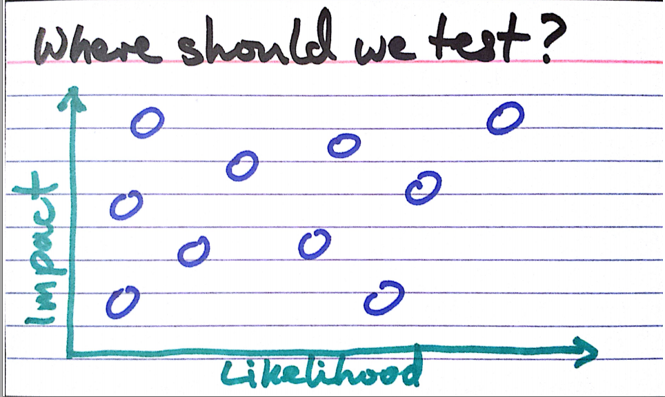
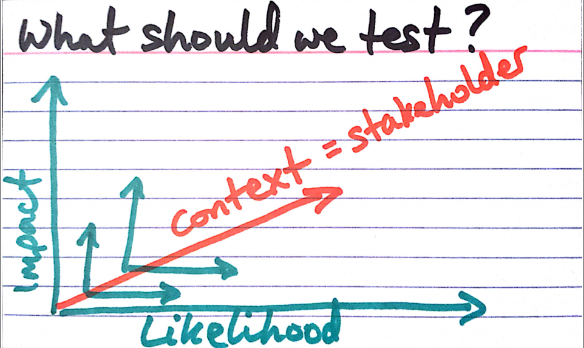

Agile QA
Pragmatyczne zapewnianie jakości
2015
License: CC BY-ND 3.0 PLTest plany, strategie, metodyki
Testy oprogramowania
Waterfall

Waterfall Spiral model

Agile
- Lean
- Kanban (WIP)
- RUP
- XP (eXtreme programming)
- Scrum
- (…)
Lean
Think big, act small, fail fast, learn rapidly
- Eliminate Waste
- Build Quality In
- Create Knowledge
- Defer Commitment
- Deliver Fast
- Respect People
- Optimize the Whole
xp

scrum

Zespół Scrumowy

Agile vs Waterfall
- Łatwość wprowadzania zmian
- Szybka adaptacja
- Większa kontrola nad ryzykiem
- Szybciej dostarczamy wartość
- Dostarczony produkt jest bliższy oczekiwaniom
Tester?


Rola i oczekiwania wobec testera
- Każdy dba o jakość
- Testowanie jest ciągłe
- Testowanie nie wstrzymuje dostarczenia produktu
- Skrócona pętla sprzężenia zwrotnego w zespole
- Testy opisują oczekiwania i wymagania
- Brak czasu na ręczne testy regresji
Kiedy zacząć testowanie?
Jak najwcześniej...
Tylko co testować?
Mam plan
- Chaos
- Zwinnie czyli chaos
- Nie mamy planu
- Nie wiem
- Był plan ale porzuciliśmy go
- Wszystko się zmienia więc nie warto planować
Testing strategy – Test Plan
- Przewodnik, wizja
- Jak i kiedy
- Zakres
- Typy i poziomy testów (kryteria wy/we)
- Środowiska
- Zarządzanie błędami
- Metryki (kryteria akceptacji)
Test Plan
- Estymacje i harmonogram
- Przypadki testowe
- Dane
- Konkretne narzędzia
- Role i odpowiedzialności
- Artefakty
- Raportowanie wyników
Strategia i planowanie w pigułce
Tylko co testować?
Strategia i planowanie w pigułce
Tylko co testować?
Testing strategy – Test Plan
PrzykładyTesting strategy – Test Plan - pułapki
- Ślepe i bezmyślne trzymanie się planu
- Armata na wróbla i zbyt ambitny (prawo)
- Zbyt detaliczny -> koszty utrzymania
Time spend on documenting is timeJ. Bach
not spent on testing
Pracujemy w Agile
Pracujemy z klientem

UCD & Agile

Co dostarcza UCD?
Persona
- Zdjęcie
- Opis - wiek, zawód, krótkie wprowadzenie
- Potrzeby
- Cele
- Czego nie lubi?
Korzyści posiadania persony
- Użytkownik staje się namacalny
- Odwołujemy się do konkretnej osoby
- Nie mówimy użytkownik
- Wykorzystujemy je do tworzenia user stories
User Story
- Technika opisywania wymagań
- Krótkie historyjki opisujące akcje do wykonania w systemie
- Zrozumiałe dla zespołu i dla klientów
- Ważne są cele użytkownika, nie właściwości systemu
Konstrukcja user story
- Jako → persona
- Chcę → wykonać akcję - ale nie rozwiązanie!
- Żeby → osiągnąć coś ważnego dla mnie
Wymagania vs user story
- Produkt powinien być biały
- Produkt powinien być podłączony do prądu
- Produkt powinien opiekać z góry i z dołu
Czy to jest to czego klient chciał?

Don’t try to tell the customer what he wants.Gene Buckley, President Sikorsky Aircraft
If you want to be smart, be smart in the shower.
Then get out, go to work and serve the customer!
Popełniliśmy typowe błędy!
- Technikalia
- Produkt zamiast doświadczeń użytkownika
- Parametry i cechy zamiast zachowań
- Sugerowanie rozwiązania
User story
charakterystyka
- Independent
- Negotiable
- Valuable
- Estimatable
- Small
- Testable
Wymagania vs user story
Jako Kamila,
Chcę zjeść tosta z serem w środku,
Żeby zaspokoić głód

Persona
Krystian Kocur

- DANE: Krystian Kocur
- ZAWÓD: Prezes firmy
- WIEK: 42 lata
- ADRES: Gliwice
- WYKSZTAŁCENIE:
Studia magisterskie - Chemia -
ŻYCIE OSOBISTE:
- Żonaty
- Dwoje dzieci (11 i 14 lat)
- Uwielbia swoją daczę na mazurach
- Uzależniony od telefonu komórkowego i GPS
- HOBBY: Tenis, Film, Podróże
- MOTTO:
Czas to pieniądz.
-
NIE LUBI:
- Bezsensownych spotkań
- Nieplanowanych wizyt w sklepie
- Telefonów od żony z przypomnieniem co ma kupić
-
CECHY / OTOCZENIE:
- Zabiegany
- Nowoczesny
- Konkretny
- Wszystko planuje
-
OCZEKIWANIA:
- Pomocna dłoń w codziennych obowiązkach.
- Łatwość zapisywania zadań.
- Zawsze pod ręką.
- Wsparcie w organizacji.
Nasz klient to bogaty, zmanierowany prezes firmy farmaceutycznej, który chce robić efektywnie zakupy.
Ma niestety problemy z pamięcią. Zawsze zapomina co ma kupić, lecytyna nie pomaga. Potrzebuje pomocy w zapamiętywaniu.
Dzięki niej nie będzie musiał z pustymi rękami wracać do domu, gdzie czeka na niego wściekła żona.
Zbieramy wymagania!
Rozmowa z product ownerem
Zadanie 1
Użytkownik może się zalogować na własne konto
Jako Krystian,
Chcę się zalogować do aplikacji,
Żeby zobaczyć swoje listy zadań
Zadanie 2
Lista zamknięta jest niedostępna dla użytkownika
Jako Krystian,
Chcę aby moje zamknięte listy nie były widoczne,
Żeby nie wprowadzały mnie w błąd
Zadanie 3
Lista jest zamknięta kiedy wszystkie jej elementy są zrobione
Jako Krystian,
Chcę zamknąć wszystkie elementy znajdujące się na liście,
Żeby lista została automatycznie zamknięta i nie wprowadzała mnie w błąd
Język Domenowy
Kto? Co? Kiedy?
Przykład
- Zadanie zrobione / Zadanie zamknięte
- Zadanie nie zrobione / Zadanie otwarte
- Zamknięta lista
- Otwarta lista
Przerwa
Architektura testów
Multi-layer architecture

Piramida testów
Odwrotna piramida

Acceptance tests
Acceptance tests
Dlaczego od środka?
Acceptance tests
Testy akceptacyjne
- Testy integracyjne.
- Testy funkcjonalne.
- Testy regresyjne.
- Testy domeny i logiki.
Cykl ATDD

BDD
BDD
- Sposób zapisu
- Mocno zorientowany na Agile
- Story BDD
- Spec BDD
Cykl BDD

Story BDD
Opis funkcjonalności i logiki biznesowej z punktu widzenia dostarczonej wartości dla klienta.
To właśnie jeden ze sposobów opisu szczegółów technicznych w języku domenowym, zrozumiałym nawet dla nietechnicznego klienta.
Story BDD - Formaty
-
Connextra
AS A ... jako kto I WANT ... wykonać cel SO THAT ... osiągnąć korzyść
-
Feature Injection
IN ORDER TO ... osiągnąć korzyść AS A ... jako kto I WANT ... czynność / cel
-
Given/When/Then
-
GIVEN ... warunki początkowe WHEN ... wykonując czynności THEN ... weryfikacja
-
Spec BDD
Niskopoziomowy opis implementacji konkretnego fragmentu.
TDD 2.0
Zadanie
Przerwa
Unit tests
Testy jednostkowe
Unit tests
Testy jednostkowe
- Podstawowa warstwa testów
- Dostarcza najszybciej informację zwrotną
- Typ testów biało-skrzynkowych
- Zawiera detale implementacyjne
- Unit to jednostka funkcjonalna
- Najlepszy stosunek: KOSZT / ZYSK
TDD

Zadanie
Automated GUI tests
Automated GUI tests
- Zautomatyzowane scenariusze testowe.
- Nie za dobry stosunek: KOSZT / ZYSK
GUI - Test Runner

GUI - Page Object

- Odzwierciedlenie strony w kodzie
- Relacja dziedziczenia
- Klasa bazowa - ogół
- Klasa pochodna - szczegół
GUI - Selektory
<div class="container">
<label><input id="option" type="checkbox" /> Opcja</label>
<input type="submit" value="Submit" />
</div>
-
CSS
#optiondiv.containerinput[type='submit']
-
XPath
/div/label/input/*[contains(text(), 'Opcja')]/div/preceding-sibling::input
Zadanie
Specification By Example
Acceptance Test-Driven Development
- Podejście łączące BDD i wymagania czytelne dla klienta
- Wykonywalna specyfikacja uruchamiająca kod
- Wiele warstw testów współgrających ze sobą
Executable Specification
Fitnesse

Korzyści płynące z automatyzacji
- Agile stawia na automatyzację.
- Możliwość przetestowania wielu zestawów danych.
- Minimalizacja żmudnej pracy.
- Szybka informacja zwrotna (GO / NO GO).
Automatyzacja środowiska
Po co osobne środowisko testowe?
- 'U mnie działa'!
- Czasochłonne stawianie środowiska dla nowego pracownika
- Środowisko powinno być (mniejszą) kopią środowiska produkcyjnego
Continuous Integration
- automatyczne buildy
- automatyczne testy
- automatyczne wdrożenie? (CD)

http://blog.crisp.se/2013/02/05/yassalsundman/continuous-delivery-vs-continuous-deployment
Provisioning
Zarządanie konfiguracją
- Chef/Puppet/Ansible/etc.
- Npm/Choco/Bundle/etc.
Wirtualizacja środowiska
- VirtualBox, VMWare, Hyper-V
- Vagrant
- Docker
- IaaC / DevOps
Przykładowa konfiguracja vagranta
Vagrant.configure(2) do |config|
config.vm.box = "win7IE10_with_winRM"
config.vm.box_url = "http://aka.ms/vagrant-win7-ie10"
...
config.vm.network :forwarded_port, guest: 5985, host: 55985,
id: "winrm", auto_correct: true
config.vm.network "private_network"
...
config.vm.provider "virtualbox" do |vb|
vb.gui = true
vb.memory = "1024"
vb.cpus = 2
vb.customize ["modifyvm", :id, "--clipboard", "bidirectional"]
end
...
config.vm.provision "shell", inline: "choco install ruby1.9 -y"
config.vm.provision "shell", inline: "choco install ruby.devkit -y"
...
end Rozwoj QA, kompetencje, rola QA, testy eksploracyjne
Cele testowania
Typy testów

Zadanie
- Automated & Manual
- Exploratory Testing
- Functional Tests
- Unit Tests
- Component Tests
- Simulations
- Alpha/Beta
- UAT (User Acceptance Testing)
- Performance & Load Testing
- Prototypes
- Automated
- Security Testing
- Manual
- Story Tests
- "ility Testing"
- Tools
Cele testowania
Typy testów

Exploratory testing
- Learn about the product
- Learn about the market
- Learn about the ways the product could fail
- Learn about the weaknesses of the product
- Learn about how to test the product
- Test the product
- Report the problems
- Advocate for repairs
- Develop new tests based on what you have learned so far
http://www.satisfice.com/tools/htsm.pdf
http://msdn.microsoft.com/en-us/library/jj620911.aspx
http://www.satisfice.com/tools/procedure.pdf
Rola QA w zespole

Rola QA - Indetyfikacja wartości
- Provide continuous feedback.
- Deliver value to the customer.
- Enable face-to-face communication.
- Have courage.
- Keep it simple.
- Practice continuous improvement.
- Respond to change.
- Self-organize.
- Focus on people.
- Enjoy.
Rola QA

Rola QA - kierunki

Testing craftmanship
- Testing Dojos
- Programming Katas
- Exploratory testing
- XP pracites
- Learn new language/new framework
- Test design, code design, design patterns
- Conferences: Quality Excites, Testwarez, Test Well, TestFest
- Meetups: Quality Meetup, WrotQA, PtaQ, KraQA
- …?